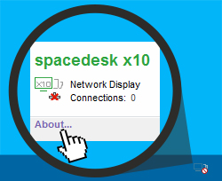
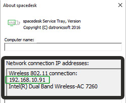

Hello!
This Guide will help you to connect basicview with your spacedesk server.
Ok, let's do this!

First click on the spacedesk-Icon
in the tray of your PC (lower right).
A new Window appears. Now Click on 'About...'
Next

Look for your IP-Address in the lower section.
Usually your IP starts with 192.168...
Next
Hurray!
Now put your IP-Address in the textbox below and press the connect button.
Done
Image Compression Quality
Fast speed
Low Quality
Low Quality
|
Slow speed
High Quality
High Quality
Color Depth (Chroma Downsampling)
(Default)